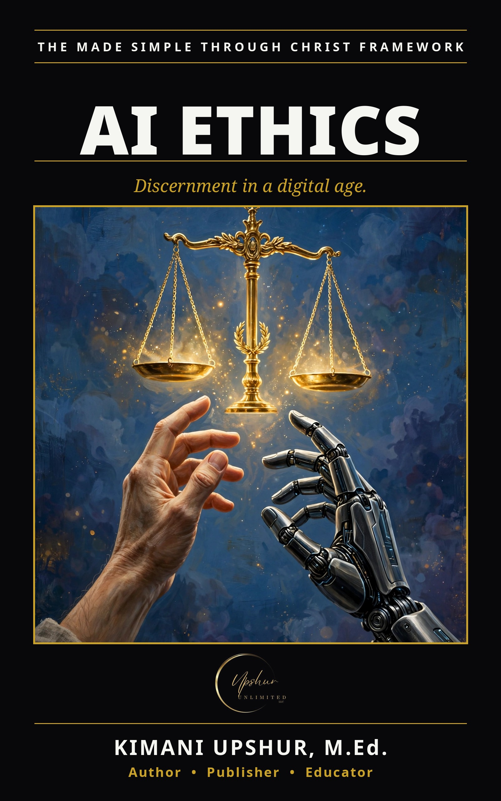

Readers Also Browse
More Tech & AI titles.
AI Tools Made Simple
Tech & AI
by Kimani Upshur, M.Ed.
Ebook $4.99 · Audiobook $9.99
AI and Education Made Simple
Tech & AI
by Kimani Upshur, M.Ed.
Ebook $4.99 · Audiobook $9.99
Artificial Intelligence Made Simple
Tech & AI
by Kimani Upshur, M.Ed.
Artificial General Intelligence Made Simple
Tech & AI
by Kimani Upshur, M.Ed.
Ebook $4.99